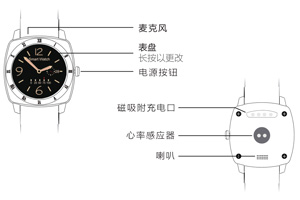

HT-880云智能手表使用手册
封面

电源按钮：长按开机/关机，短按返回主界面
表盘：长按可更换变盘
设备连接
1.开启手表端/手机端蓝牙。
2.启动APP ：航通守护者。
3.按照APP指引注册新的用户或登录已有账号，选择“蓝牙手表”，点击搜索蓝牙手表进行搜索。
4.蓝牙搜索结果页面选择手表名称“HT880”与之配对，配对成功后该界面显示已连接成功设备。
5.航通守护者APP端显示已连接，蓝牙连接成功。
功能及使用说明介绍
1.时间同步：在手表时间同步开关（设置—时钟—时间同步）默认开启前提下，与手表蓝牙连接成功后，时间和日期会与手表系统当前时间与日期同步成功并进行更新。
2.功能键切换：上下滑动手表屏幕可进行功能键切换。
3.找手表：点击APP中“找手表”按钮，手表会响铃或震动。
4.运动记录：在手表功能界面选择运动，可以开启/关闭运动，并可查看历史记录。
5.睡眠质量：在手表功能界面选择睡眠，点击“开始”按钮开始记录睡眠质量。
6.心率监测：在手表功能界面选择心率，点击“开始”按钮则开始监测心率。
7.SOS功能：表盘主界面切换至SOS界面，点击SOS按键，手表会将实时位置发送至APP，绑定手机及授权手机可实时查看，以便快速获得援助。
8.智慧秘书：在APP中点击“智慧秘书”按钮，添加提醒事件，到达设定时间后手表会自动提示。
9.久坐提醒：点击“久坐”按钮，设置久坐时长，点击“确定”，达到设置时长后手表会自动提醒。
10.返回：向右滑动屏幕，可以返回上一级界面。
11.表盘切换：长按表盘主界面进入表盘切换界面，选择所要切换的表盘点击“确定”。
12.语言设置功能：在设置功能项中，点击“语言”选择语言后，点击“确认”保存。
13.查看蓝牙地址：在设置功能中点击关于即可查看蓝牙地址。
充电介绍
设备支持主流手机适配器，为环保考虑，所以未配置电源适配器。请选择合适的适配器给设备充电即可。
配件
1.充电线
2.使用说明书
常见问题
1.为什么无法开机？
答：可能由于运输时间过长，电池耗尽电量导致，请连接充电器充电后会自动开机。
2.为什么蓝牙连接一直显示“加载中”？
答：请确认网络正常，加载时间过长点击手机返回键，重新连接蓝牙即可。
3.家庭成员无法查看当前位置？
答：请确认添加成员时开启位置服务。
4.为什么蓝牙断开连接？
答：蓝牙超出有效距离或者蓝牙信号不好会断开连接，在有效时间内会自动重新连接。信号不好时会反复自动断连。
5.为什么app无运动、睡觉、心率数据？
答：请确认手表已佩戴且已开启运动、睡眠、心率功能；APP首页向下滑动可刷新数据。
注意事项
1、请不要将产品浸泡在水中；
2、请将产品远离火源、高温高热等极端环境；
3、本产品在断电状态和无网络服务时，定位功能无法工作。
售后服务
请咨询当地的业务人员或者我司售后服务中心。
联系我们
有任何问题或建议，欢迎您随时联系我们。
中国大陆
官方微信：航通守护者
客服QQ:3106893070
服务热线：0755-8601 8738
中国香港
服务热线：+852-26273380
邮箱：cs-liteguardian@castelbeidou.com
海外
邮箱: sales@castelbds.com
公司网页:www.lite-guardian.com
服务热线:+8675586018742